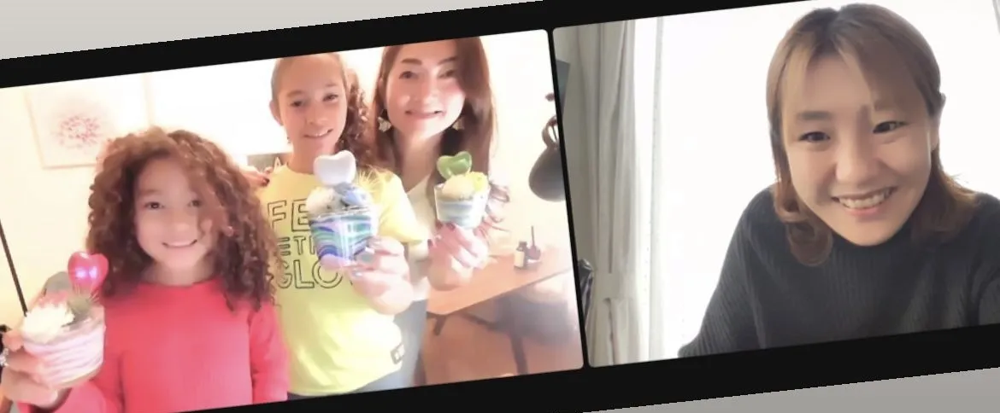

リモートワークや拠点の分散で、「全員が参加できる社内イベントがやりにくい」という声が増えています。オンラインサンドアートなら、全国・海外の拠点をZoomなどでつなぎ、それぞれの自宅やオフィスから同時に参加可能。準備不要で、参加者全員が世界にひとつの作品を手元に残せる、リモート懇親会・社内レク・チームビルディングにぴったりのプログラムです。
なぜ今、オンライン社内イベントなのか
在宅勤務や複数拠点が当たり前になり、「集まらなくても一体感を作れる企画」が求められています。オンラインサンドアートは、場所を問わず・移動コストゼロで全員が同じ体験を共有できるため、本社と地方拠点、さらには海外メンバーも一緒に楽しめます。
オンラインサンドアートが企業イベントに向く理由
- 準備も片付けも不要：色砂・容器・飾り・道具まで一式を各参加者へ事前配送。幹事様の当日負担はありません。
- 全員が“成果物”を持てる：完成した作品が手元に残るので、満足度が高く、デスクに飾ってもらえます。
- スキル・年齢を問わない：色を重ねるだけで誰でも必ず完成。新入社員からベテランまで同じ目線で楽しめます。
- 短時間・大人数に対応：所要30〜60分。大人数は時間帯や班を分けて開催できます。
- 会話が生まれる：色選びや仕上がりを見せ合うことで、自然とコミュニケーションが生まれます。
こんなシーンで活用されています
- リモート懇親会・オンライン歓迎会／送別会
- チームビルディング研修・部署間交流
- 社内レクリエーション・福利厚生イベント
- 周年イベント・表彰式のアトラクション
- 内定者懇親会・新入社員研修
- 本社と地方拠点・海外拠点をつなぐ交流会
開催の流れ（4ステップ）
- ヒアリング・お見積り：人数・目的・ご予算・希望日時をうかがい、最適なプランをご提案します。
- 材料キットを事前配送：参加者それぞれの自宅・オフィスへ、必要な材料一式を郵送します。
- 当日オンライン開催：Zoomなどで接続し、講師が画面越しに進行。色の重ね方をリードします。
- 完成・感想シェア：作品を見せ合って記念撮影。一体感のある締めくくりになります。
料金・人数・対応エリア
料金は1人2,000円〜（材料キット・送料・講師進行料込み／内容により変動）。人数は少人数から大人数まで対応し、大人数の場合は班分け・複数回開催でご相談いただけます。配送できる地域であれば全国どこでも、海外拠点は個別にご相談ください。請求書・見積書の発行にも対応します。企業様向けの詳細は企業・団体向けページをご覧ください。
よくある質問
Q. 参加者が全国バラバラでも大丈夫ですか？
A. はい。各参加者の住所へ個別にキットを配送できます。本社・地方拠点・在宅メンバーが同時に参加できます。
Q. 何人まで対応できますか？
A. 少人数から大人数まで対応可能です。大人数は時間帯や班を分けて開催します。まずは人数をお知らせください。
Q. 特別な機材やソフトは必要ですか？
A. ネット接続できるPC・タブレット・スマホがあればOK。Zoomなど貴社でお使いのツールに合わせられます。
Q. 請求書払いはできますか？
A. 可能です。見積書・請求書の発行、お支払い条件のご相談も承ります。
まとめ
オンラインサンドアートは、準備不要・全国/海外対応・全員が作品を持ち帰れる企業向けプログラムです。リモートでも一体感のある社内イベントを作りたいご担当者様は、ぜひお気軽にご相談ください。対面での出張ワークショップ（福岡・全国）や全国出張対応もあわせてご検討いただけます。
オンライン社内イベントのご相談
24時間以内に返信いたします。人数・目的に合わせて最適なプランをご提案します。見積書・請求書にも対応します。

原野 玲未REMI HARANO
日本サンドアート協会 認定講師 / Webデザイナー
福岡県在住、5児の母。年間100件以上の出張ワークショップ・オンラインレッスンを開催しています。